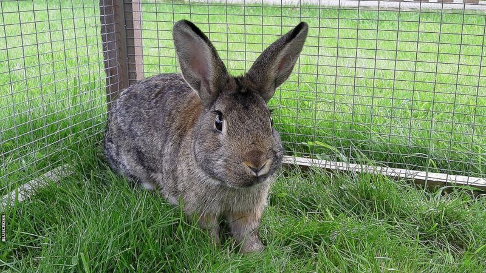

Bunnies make great pets for people who want a little furry companion, but might not have the space or time for a larger animal like a cat or a dog. They can be loyal, playful and give so much love to their owners. They can even be trained to do tricks and use a litter box just like a cat or dog.
